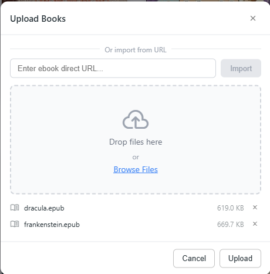

Uploading Books
You can upload e-books from this computer to your own library. Uploaded books are visible only to you.
Supported formats
EPUB, MOBI, AZW3, PDF and TXT.
Upload steps
- Click Upload in the Shelf top bar.
- Choose files from this computer; you can pick several at once.
- Confirm and the upload starts; the dialog shows progress.
- When it finishes, the books appear on the Shelf.

Size and count limits
There is an upper limit on each file and on how many files one batch can contain; the exact numbers depend on your plan. You are warned before the upload starts.
After uploading
- You can edit the title, author and other basics in the book details.
- You can add categories and tags, so the book is easy to filter later.
- You can delete books you uploaded. Deleting a book also clears its bookmarks, notes and reading position.